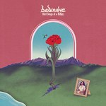
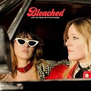
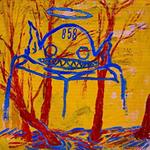

Quick Takes (July 2019)
Hello everyone, and welcome to our latest installment of Quick Takes!
The current month is heating up with a plethora of notable releases, so expect our content to greatly increase in the next few weeks. In the meantime, here's a solid sorting of albums that we greatly enjoyed in the month of July. Joe had very nice things to say about the new Beoduine (an album I like even more than he does!), while Kirk gives his thoughts on promising L.A.-based indie rockers GOON. I, on the other hand, totally dug Bleached's evolution ever-reliable power-pop meets new wave and indie-folk mainstay Jesca Hoop's intense, heartfelt return. And for those who've stuck around with The Flaming Lips through the years, I'm happy to report that their conceptual new album is worth your time.
What were your favorite albums during the month of June? Anything we didn't get to review that we should've? You can always reach us on Facebook, or on our official twitter page. - Juan
..
Bedouine
Bird Songs of a Killjoy
(Spacebomb Records)
Bedouine’s second album is one of those pieces of music that you can both listen to effortlessly, letting your mind float away, and also dive into deeply, peeling back layers of instrumentation. Her acoustic guitar melodies are the stars around which sweeping strings, expressive winds, and serene harmonies orbit. It’s this sweet spot between accessibility and complexity where Bedouine does her best work. And at the forefront is her poignant, revealing voice. Whether it’s the sly smile of love games found on the bright When You’re Gone, the determined acceptance of One More Time, or the loving ode to nature in Hummingbird, Bedouine brings the same beauty and warmth to each track. Although it runs a bit too long and some songs blend together, Bird Songs of a Killjoy is a heartwarming and enchanting listen. It’s as far from a killjoy as you can get. [8/10] Joe Marvilli
Bleached
Don’t You Think You’ve Had Enough?
(Dead Oceans)
There's only so much that Bleached could do to retain their grimy, power-pop sound while pushing it forward. But on their third album, Don’t You Think You’ve Had Enough?, the Los Angeles duo of Jennifer and Jessie Calvin attempt to refine their slick guitars and rough pop hooks with some subtle changes in technique, layering their crunchy riffs into styles like leftfield disco to European noise pop. Not that the changes are that dramatic— think of it as the Go Go's ditching the lean, punky new wave of Vacation with the more polished, compressed production of Talk Show. Still, true to their L.A. roots, they can't quite abandon the love-stricken cliches taken from their eighties influences, from revisionist West Hollywood glam (Heartbeat Away) and Bomp! records-inspired rock (Rebound City, which sounds like a homage to 20/20's Beat City) to tight, driving rhythms (Real Life). The duo is right in their element on Daydream, which sounds like a cleaner, polished version of their past work, mastering the three-minute pop-rock song with plenty of melody and attitude. [7/10] Juan Edgardo Rodríguez
 The Flaming Lips
The Flaming Lips
King’s Mouth
(Warner Records)
With The Flaming Lips, one's conditioned to expect the unexpected. And as far as ideas go, the Oklahoma art-rock veterans make another unconventional move with their latest musical concept, King's Mouth. Written to complement the soundtrack to an art exhibit, the band's fifteenth album doesn't function as a mainline Lips studio album, if only because it transitions almost like a classical movement and not a sequenced set of songs. And yet it's surprising how they opt to use a leaner palette of sounds, all twelve tracks moving like a surreal psych odyssey that's interspersed with Wayne Coyne's airy, fanciful vocals and the prim narration of The Clash's Mick Jones. Fitting somewhere between 2002's Yoshimi Battles the Pink Robots and 2013's The Terror, the lovable weirdos balance bombast and whimsy with their usual sentimental, cosmic awe. And though the album's theme is fairly inconsequential, more appealing as a one-off project for diehards, their prog-folk experiment breathes new life into a band that had seemingly lost their way. [7/10] Juan Edgardo Rodríguez
GOON
Heaven is Humming
(Partisan Records)
GOON's first long play, Heaven is Humming, feels like a forgotten Kill Rock Stars record from the late 90s. Trust me, you won't believe it was released last month. Imagine early Elliot Smith jamming with mid-career Unwound. The album opens with some sludgy post-hardcore wallops, but quickly segues into dreamier territory, with metronomic drums backed by a wallpaper of reverb strums and washes; you might as well throw in a Slowdive reference as well. These stylistic markers suggest one of two outcomes: a derivative hack mimicking their heroes, or a group that has devoured great music, understood what makes it work, then set off on their own. GOON follows the latter trajectory, suggesting a band that isn't playing to nostalgia, but rather picking up the baton dropped by long dismantled Kill Rock Stars bands. As a result, Heaven is Humming is not only a surprisingly potent post-hardcore tonic for this era, but portends great things for GOON moving forward. [8/10] Kirk Sever
 Jesca Hoop
Jesca Hoop
STONECHILD
(Memphis Industries)
Jesca Hoop's powerfully evocative return, STONECHILD, articulates a view of womanhood that is multifaceted and complex. The California-via Manchester singer songwriter's latest offering addresses stark truths with uncompromising courage, presented in vignettes depicting stories of characters who exhibit a strong moral character—and the fraught relationships they form with others. That doesn't mean that they're exempt of any ethical responsibility. In fact, far from it—she reveals one's own struggles and faults with a callous examination, reflecting on lessons learned. Through her haunting, finger-picked arrangements and wavering vocals, her lyrical musings are often sophisticated and mysterious—on songs like Football to the Path and Free from the Feeling, she injects pithy sentiments that, as precise as they may be, seem to only tell a fraction of the story. And that's part of what makes STONECHILD so fascinating and absorbing—the duality of hopefulness and dissolution she presents is intoxicating (with droning, ethereal soundscapes that are chilling in their stillness, to boot). [8/10] Juan Edgardo Rodríguez
 Mega Bog
Mega Bog
Dolphine
(Paradise of Bachelors)
At first, Erin Birgy’s fifth album, Dolphine, may seem like an overwhelming exploration of her bookish influences—the experimental stamina of Alice Motley, the live simulations of Ian Cheng, and the fantasy novels of Ursula K. Le Guin, to name a few. But just like she's merely adopted select factions of taste to frame her own imagination, the singer-songwriter's hodgepodge of lyrical allusions and bohemian jazz also stimulate the senses with a creative purity. From a musical standpoint, Bog seems like she's immersing herself with a full band—and having fun with it, too. She follows her curiosity with abandon, deconstructing pop modalities with space and patience—from the strings-drenched chamber jazz (For the Old World) and the warped avant-garde of the title track to campfire folk (Spirit in the Eye of the Fire King,") her wildly eclectic, though sometimes distancing, choices sound familiar, yet completely their own. For a decade now, Bog's creative will remains intact, demonstrating thought-provoking works that, like art, first elicit a quick reaction—and inspire new and multiple meanings under closer scrutiny. [7/10] Juan Edgardo Rodríguez
14 August, 2019 - 17:48 — No Ripcord Staff